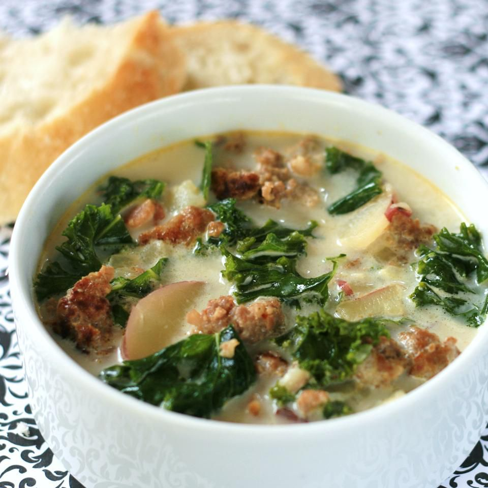

Super-Delicious Zuppa Toscana

Zuppa Toscana is oh-so-good! This recipe has just the right amount of spice to keep you coming back for more!
This zuppa toscana recipe is hearty, flavorful, and delicious — not to mention identical to a popular menu item at a certain chain restaurant!
Ingredients
- Meat
- Spices
- Vegetables
- Broth
- Cream
How to make Zuppa Toscana
- Cook the Italian sausage with the red pepper flakes
- Cook the bacon, then cook the onion and garlic in the bacon drippings
- Add the broth and bring to a boil, then add the potatoes and simmer
- Reduce the heat and stir in the cream, cooked sausage, and spinach.